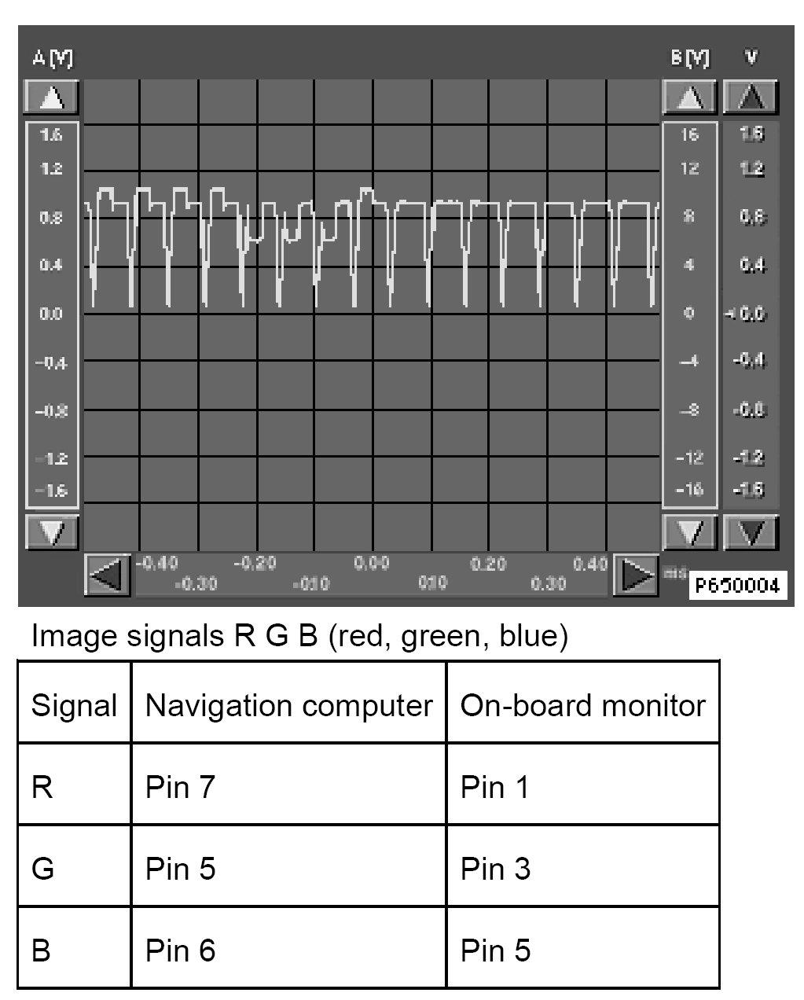
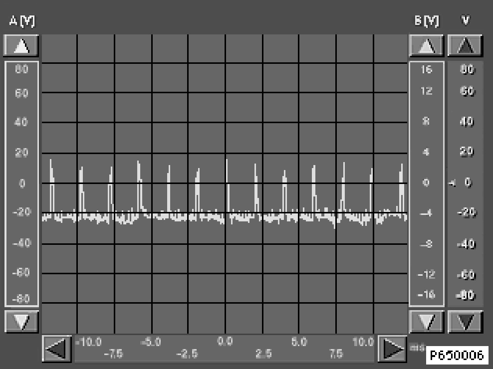

RGB Signals (Without VID Video Module)
RGB Signals
All oscilloscope images are reference values and may deviate depending on the image content!


Ground LC display < Evaluate voltage range only ! >
Navigation computer On-board monitor
Pin 12 Pin 7